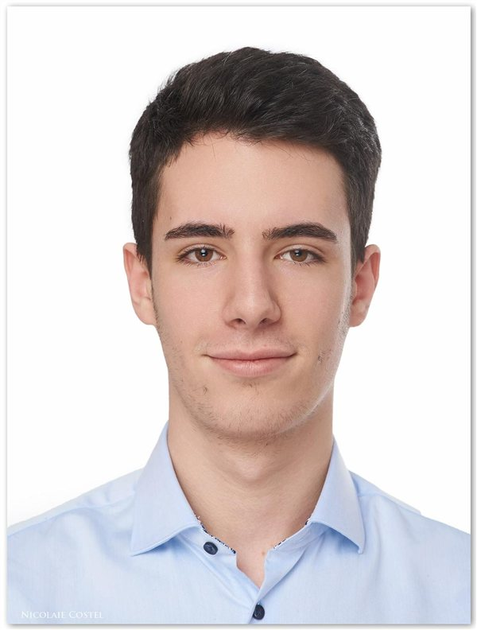

Hi, I’m Stefan.
I like turning an idea into something that works, whether it runs on a GPU, drives on four wheels, or takes flight.
My background spans machine learning, computer vision, robotics, and embedded systems. I enjoy connecting these disciplines to build reliable software and bring ideas into the real world.
Education
View my CVRWTH Aachen University
M.Sc. in Computer Engineering
2023–2025
Master’s thesisAnalysis of Uncertainty Estimates for Transformer-based Radar-, Camera-, and LiDAR-driven 3D Object Detectors
B.Sc. in Electrical Engineering
2019–2023
Bachelor’s thesisEvaluation of data representations for a memristor-based matrix-vector-multiplication engine
What I work with
- Software & delivery
- C/C++, Python, Bash, Git, Linux, Docker, FastAPI, multithreading, GitLab CI/CD, Jenkins
- AI & computer vision
- PyTorch, JAX, Scikit-learn, OpenCV, Hugging Face Transformers, YOLO, SAM 2, depth estimation, object tracking
- AI agents & automation
- LLMs, LangChain, LangGraph, RAG, multi-agent orchestration, Whisper, TTS/STT, self-healing tests, Jira, CI/CT
- Robotics & flight
- ROS2, Gazebo, PX4, ArduPilot, Betaflight, MAVLink, QGroundControl, offboard control, PID tuning, sensor fusion, Kalman filters
- Embedded & edge AI
- Raspberry Pi, ESP32, NVIDIA Jetson, Hailo, TensorRT, ONNX, UART/SPI, cameras, radar, LiDAR
- Modeling & research
- MATLAB/Simulink, Cadence, SPICE, inverse dynamics, uncertainty estimation, model calibration, in-memory computing
Let’s connect
stefan.vilceanu@rwth-aachen.de ↗
vilceanu.stefan@yahoo.com ↗
+40 734 588 720
Oswald-Hesse-Str. 27
70469 Stuttgart, Germany
70469 Stuttgart, Germany